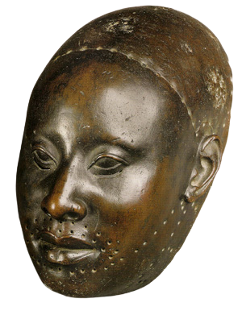

Oshogbo
Osogbo (also Oṣogbo, rarely Oshogbo) is a city in Nigeria. It became the capital city of Osun State in 1991. Osogbo city seats the Headquarters of both Osogbo Local Government Area (situated at Oke Baale Area of the city) and Olorunda Local Government Area (situated at Igbonna Area of the city). It is some 88 kilometers by road northeast of Ibadan. It is also 108 kilometres (67 mi) by road south of Ilorin(kwara state) and 108 kilometres (67 mi) northwest of Akure. Osogbo shares boundaries with Ikirun, Ilesa, Ede, Egbedore, Ogbomosho and Iragbiji and is easily accessible from any part of the state because of its central nature. It is about 48 km from Ife, 32 km from Ilesa, 46 km from Iwo, 48 km from Ikire and 46 km from Ila-Orangun; The city had a population of about 500,000 people and an approximate land area of 2875 km2
Ilesha
Ilesa (Yoruba: Iléṣà) is a village located in the Osun State, southwest Nigeria; it is also the name of a historic kingdom (also known as Ijesha) centred on that village. The state is ruled by a monarch bearing the title of the Owa Obokun Adimula of Ijesaland. The state of Ilesa consisted of Ilesa itself and a number of smaller surrounding cities. The Ijesa, a term also denoting the people of the state of Ilesa, are part of the present Osun State of Nigeria. Some of the popular towns of the Ijesa are Odo-Ijesa, Ilaje, Igbogi, Ise-Ijesa, Ibokun, Erin Ijesa, Ijeda-Ijesa, Ipetu Jesa, Ijebu-Jesa, Esa-Oke,Esa Odo, Ipole Ijesa, Ifewara Ijesa, Ipo Arakeji, Iloko Ijesa, Iwara Ijesa, Iperindo Ijesa, Erinmo Ijesa, Iwaraja Ijesa, Oke-Ana Ijesa, Idominasi, Ilase Ijesa, Igangan ijesa, Imo Ijesa, Alakowe Ijesa, Osu Ijesa, Eti Oni, Itaore, Itagunmodi, Iyinta, Itaapa, Epe Ijesa, Omo Ijesa, Eti-oni, Ibokun, Inila, Ijinla, Iloba Ijesa, Odo Ijesa, Imogbara Ijesa, Eseun Ijesa, Iloo, Owena Ijesa, Ido Ijesa, Ido Oko, Ibala Ijesa, Ere Ijesa, Ilahun, Ibodi, Ijaaregbe, Ikinyinwa, Idominasi, Ilowa, and Ibodi
Iwo
Iwo is a City in Osun State, Nigeria. The Iwo people, like all other people of the Yoruba kingdom, are said to have originated from Ile-Ife - where they migrated sometimes in the 14th century according to Alademomi kenyon and Prince Adelegan Adegbola (2009). The only predicted land with the symbol of the parrots (which signifies the location of the promised land) is the Iwo kingdom. The city was formerly part of old Oyo state and was later separated and became one of the major townships in Osun State, Nigeria
Ife

Ifẹ̀ (Yoruba: Ifẹ̀, also Ilé-Ifẹ̀) is an ancient Yoruba city in south-western Nigeria. The city is located in present-day Osun State. Ife is about 218 kilometers northeast of Lagos with a population of 509,813, which is the highest in Osun State according to population census of 2006